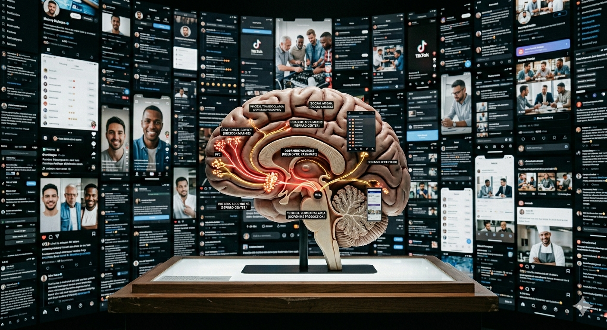
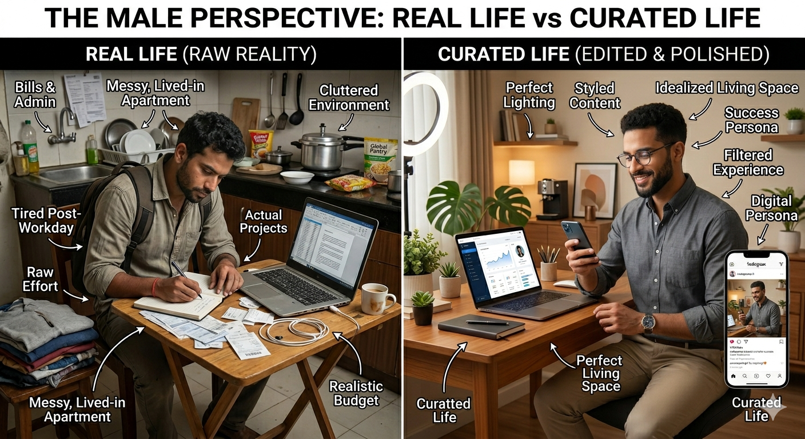
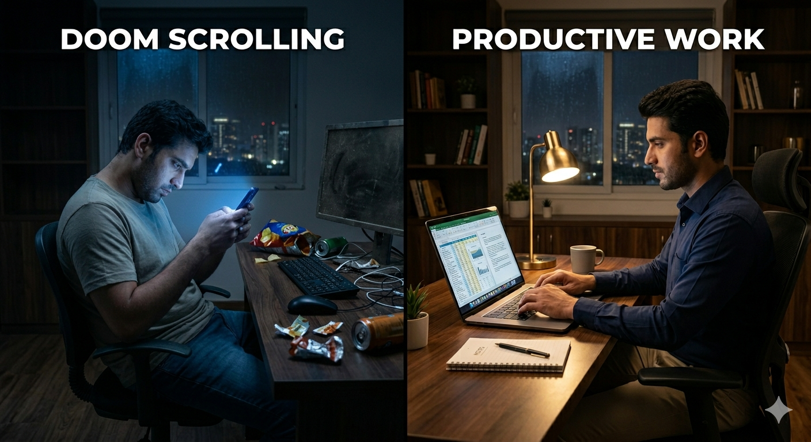

Emotional Avoidance
Many forms of procrastination originate from emotional discomfort rather than lack of discipline. Difficult tasks activate fear, uncertainty, shame, or perceived inadequacy. The brain often prioritizes short-term emotional relief over long-term achievement.

Dopamine & Instant Gratification
Digital platforms are engineered to provide rapid dopamine feedback loops. Social media, entertainment, and scrolling create immediate neurological rewards, making slow-progress tasks feel cognitively expensive and emotionally unrewarding.

Digital Perfectionism
Constant exposure to polished productivity culture intensifies perfectionistic thinking. Many individuals delay beginning work because the imagined outcome must feel flawless before action even starts.
Attention Span & Overstimulation
Continuous multitasking fragments cognitive attention. The nervous system becomes conditioned to rapid novelty, reducing tolerance for deep focus, sustained reading, and mentally demanding tasks.

Psychological Effects
Chronic procrastination gradually transforms into guilt, anxiety, lowered self-worth, and identity conflict. The unfinished task remains mentally active, increasing background stress even during periods of rest.